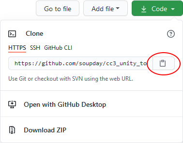
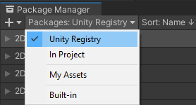
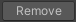

Installation
Hosting at Github
The tool is hosted in separate Github repositories for the HDRP, URP and 3D (Built in render pipeline) render pipelines. It is intended to be installed into Unity 2020.3 or above for HDRP and URP pipelines or Unity 2019.4.11f1 or above for the Built in 3D pipeline using Unity’s internal package manager. The available repositories are shown below.
Warning
Only install one version of the tool at a time. Only use the package manager for installation.
Pipeline |
Repository |
Latest Release |
|---|---|---|
HDRP |
||
URP |
||
3D |
To obtain most recent stable version follow the above link to the latest release, and download the source code.zip file from there.
Alternatively, you visit the appropriate repository to obtain the latest commit to the main branch by pressing the green ‘Code’ button and then ‘Download Zip’ from the dropdown window. Alternatively the code can be cloned directly from github via HTTPS using the ‘git URL’ which can be copied from the dropdown window (discussed later).
Installation from .zip file
Download the appropriate latest release or latest stable commit (from the code dropdown box). Unpack the .zip file into a safe + non volatile directory where you’ll be able to store the package files (7zip is a suitable tool for this, should you lack one).
Note
You must store the package files in a safe place. You can make a directory inside your project directory (eg ‘<drive>:/~~/<project directory>/downloaded files’) if you wish.
Warning
DO NOT place the unzipped files into the /Assets /Packages /Library or /ProjectSettings directories of your project.
In Unity, open your project and navigate to the ‘Package Manager’ (via Window -> Package Manager).
Now click the ‘Add’ button.

And select ‘Add package from disk’.
Navigate to the place where you unpacked the .zip file and select package.json.

The package manager will now install the tool and will end up looking like this.
The tool is fully installed and ready to be used. Remember to keep the files you installed from safe.
Installation from git URL
Pre-requisites
Packages can be installed into Unity directly from a git repository.
The sole requirement for this is that Unity must be able to find the git.exe executable somewhere on your PATH.
If you require a git executable you can install git for windows (download the 64bit windows installer and accept all the default options when installing).
Please make sure you restart Unity and Unity Hub after installing git for windows otherwise you will encounter the following error.

Installing from Github
Open the Unity package manager Window -> Package Manager, click the add (+) button and select ‘Add package from git URL’.

Copy the URL from the green code dropdown box in the git repository.
Paste this into the package manager and click ‘Add’. The package manager will now install the tool.
Dependencies
The HDRP and URP versions of the tool require minimum versions of the following packages to also be installed in your project.
Pipeline |
Package |
Min. Version |
|---|---|---|
HDRP |
10.5.0 or above. |
|
URP |
10.5.0 or above. |
Optional Installation
Post Processing Package
Users of the 3D (built in render pipeline) and URP (universal render pipeline) should consider the optional installation of the post processing package from the Unity Registry. This will be utilized automatically to give excellent quality results comparable to Character Creator’s viewport.
{kind=link}
To install the post processing package, go to the package manager window and use the ‘Packages’ dropdown to change the list show to ‘Unity Registry’.
Scroll down the list to find ‘Post Processing’. Select the item in the list and click install.
After installation the post processing stack will be added to the main camera and the custom settings automatically applied.
Alembic Package
Should you wish to use the Alembic file format for baked physics geometry (and indeed the Alembic functions from this tool), then the Alembic package is also required from the ‘Unity Registry’.
Use the above method to navigate to the ‘Unity Registry’ and select the Alembic package and click install.
This will allow Unity to correctly import and animate Alembic files.
Removal
Open the Unity package manager (Window -> Package Manager) highlight the package that you wish to remove and click the remove button.